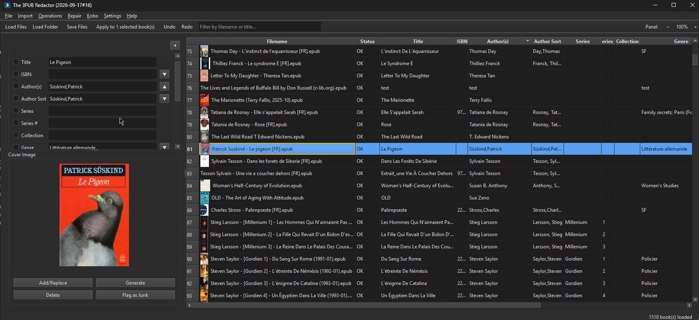

The ƎPUB Redactor
A free bulk EPUB metadata editor for Windows and Linux, built for prepping ebooks for Kobo and other e-readers.

What it does
The UX is modeled on mp3tag: load a folder of EPUB books into a table, select several at once, and apply the same field changes to all of them in one go — no opening files one at a time.
Features
- Bulk-edit panel that mirrors whichever table columns are visible, in whatever order you've dragged them to — no separate field-management screen.
- Import Metadata from Google Books and Open Library — searches by title/author and brings back title, authors, publisher, year, ISBN, genre, language, description, and cover art in one review-and-apply step.
- Import to EPUB — converts MOBI, AZW/AZW3, DOCX, RTF, TXT, FB2, and more to EPUB via your Calibre installation, then adds the results straight into the working list.
- Generate Cover from Metadata — creates a placeholder cover (title, author, series) entirely offline, for books missing one.
- Cover quality: a Cover column shows each cover's size — yellow for low-resolution, red when missing — and Find Better Covers looks up Open Library's cover by ISBN, offering only larger ones, side by side before anything changes.
- Change Case (UPPERCASE / lowercase / Title Case / Sentence case) and Number Series (sequential Series # across a batch, fractional steps supported), both with a live preview before applying.
- Rename / Export / Move and Parse Filename → Metadata, pattern-based and previewed before committing. An optional ASCII-safe filenames option turns accented letters and typographic punctuation into plain ASCII (é→e, æ→ae, ß→ss). Renames can be taken back with File > Undo Last Rename, even after a restart.
- Drag-to-reorder, hideable columns; a resizable cover-image panel; Genre and Language quick-pick lists — all persisted across restarts.
Redact, and everything since
Everything below is in the current release. Redact is the one-click path; the individual tools above remain available.
Redact steps: fix validation issues, deduplicate manifest ids, rebuild the manifest, repair navigation, generate a table of contents (a real one from headings is applied; a generic “Section N” one goes to review), strip HTML from the description, detect a blank language, read ISBN, publisher, year and series from the front matter, fill empty fields online by ISBN (Google Books, Open Library), cover (by ISBN for a missing or junk-flagged one, else a generated cover when there is none), fill empty fields from the folder path, and rename by your latest pattern once you have used one. Optional, off by default: remove orphan files and move into folders. Each changed book is written to a temp file, checked (it reopens, nothing lost, no new errors) and only then swapped in.
- Redact: one click on the toolbar (or Edit > Redact, Ctrl+Shift+E) runs an editable recipe of steps on the selected files, or on all loaded files after asking. Each changed file is saved in place and its original goes to the Recycle Bin, so the Recycle Bin is the undo. Guesses are applied only at or above a confidence threshold (90% by default); weaker ones are listed under Needs review and never written. Files with unsaved edits or that failed to load are skipped and named in the report. A saved recipe keeps the patterns it was saved with (the editor shows a pattern trail of where each pattern comes from), so changing the Rename / Export pattern later does not silently change what Redact does.
- Move into folders: Rename / Export / Move has a third mode that files each item into a folder tree under a library root, using a pattern with
/in it. The preview shows each new path, nothing is overwritten (a taken name gets “(2)”), and File > Undo Last Rename puts everything back and offers to remove the folders the move created. - Metadata from the folder path: Parse Filename also reads folders. A pattern containing
/is matched against the file name and the folders above it, counted from your library root, with a confidence shown per file. Redact has a matching step that fills only empty fields. - Export / Import Settings (File menu): your recipe, pattern history, column layout and defaults in one JSON file for a new install or a second computer. Import shows every change before applying anything. Passwords, API keys and tokens are never included; tool paths and folders are offered unticked as “this computer only”.
- Command palette (Ctrl+K): type part of any menu command to find and run it. The menus follow one layout in all four apps: File, Edit, View, Metadata, Repair, Send, Tools, Help. Open in Default App is in the right-click menu, and Ctrl+S saves every changed file (Save All).
- Generate Table of Contents (Repair menu): books with no table of contents at all, typical of badly converted scanned-PDF EPUBs, get one built from their h1–h3 headings (or page titles) in reading order. You tick which books to touch and preview the entries first. An NCX is written for every book, plus an EPUB3 nav document for EPUB3 books; chapter files are never modified.
- Scan Content for Metadata in five languages: front matter and the last pages (colophon) are read in English, Norwegian, German, French and Italian, suggesting publisher, year, edition, the book’s language, and series and volume, each with a confidence. Translator, editor and illustrator are shown for information only, since the app has no field to store them. Nothing is applied without review.
- Validation stamp: Validate / Fix Issues records when a book was checked and the result in the EPUB’s OPF (
redactor:validation), written when you Save, so it follows the file when you copy it. The Status column shows the time, and “(changed since)” if the book’s files changed afterwards. DRM-protected and unreadable books are never stamped. - DRM-aware and safer: a cover that is DRM-encrypted is kept (Replace Cover, Generate Cover and Compress Images skip it); manifests that use percent-encoded file names (
ch%201.xhtml, accented names) are read correctly, so files are no longer wrongly reported missing or removed; saving replaces the original atomically and leaves no temp file after a failure; and one unreadable book cannot abort loading a batch. - Send to Kobo finds the reader on Linux (
/media/$USER,/run/media/$USER) and macOS (/Volumes) as well as on Windows drives.
Requirements
Two downloads on each release: a standalone .exe for Windows, and epubredactor-linux-x86_64.tar.gz for 64-bit Linux (Ubuntu 22.04+, Debian 12+, Fedora 36+, Mint 21+ and the like — unpack and run; settings live in ~/.config/epubredactor/). No separate Python install needed on either. Google Books / Open Library import and cover generation work standalone; format conversion via Import to EPUB requires a local Calibre installation (on Linux, found on PATH). Full details and the changelog are in the GitHub repository.
The rest of the family
The ƎPUB Redactor shares its UI and core editing patterns with three sibling tools, via redactor_common:
 The ƆBZ Redactor
The ƆBZ Redactor The ɯP3 Redactor
The ɯP3 Redactor The Ʌideo Redactor
The Ʌideo Redactor